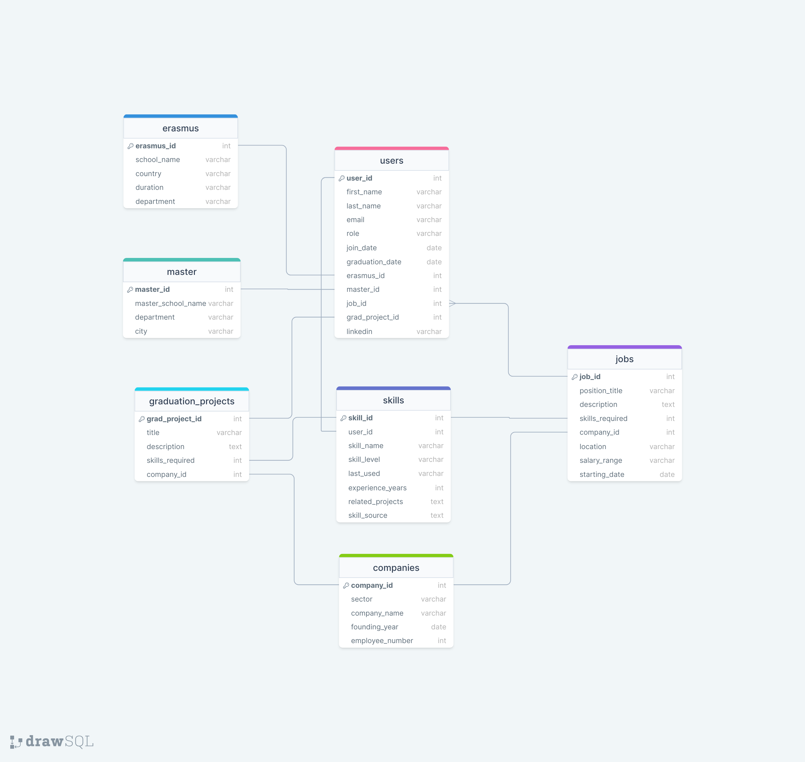

EMU415 DBMS Term Project
Team Members
Cemil Neşe - 21948303
Ömer Faruk Çiftçi - 21831151
Emre Gül - 21948121
Kerem Kaplan - 21948168
Beyza Göktaş - 21948102
Ahmet Taha Karakaya - 21948192
Hatice Nur Güneş - 21948135
Objective
The EMU Hacettepe Personal Development Platform is a platform aimed at increasing knowledge exchange among students and graduates of the Industrial Engineering Department at Hacettepe University. It aims to enhance students’ skills by sharing information on which industries our graduates work in, and how they acquire the necessary knowledge in these sectors.
Features
Graduate Sector Insights: A feature allowing graduates to share their industry experiences, including sectors they work in, knowledge acquisition methods, and career development tips. Skill and Knowledge
Gap Identification: Tools to help students identify areas for improvement by comparing their current skills and knowledge with those of graduates in various industries.
Resource Sharing Platform: A platform for sharing industry-specific resources such as articles, webinars, and online courses to enhance students’ skills and knowledge.
Relations and Their Attributes as an Initial Design
users
- user_id (Primary Key)
- first_name
- last_name
- role (e.g., Student, Researcher, Graduate)
- join_date
- graudation_date
- erasmus_id (Foreign Key)
- master_id (Foreign Key)
- job_id (Foreign Key)
- grad_project_id (Foreign Key)
jobs
- job_id (Primary Key)
- position_title
- description
- skills_required (Foreign Key (skill_id))
- company_id (Foreign Key)
- location
- salary_range
- starting_date
erasmus
- erasmus_id (Primary Key)
- school_name
- country
- duration
- department
master
- master_id (Primary Key)
- master_school_name
- department
- city
graduation_projects
- grad_project_id (Primary Key)
- title
- description
- company_id (Foreign Key)
- skills_required (Foreign Key (skill_id))
companies
- company_id (Primary Key)
- company_name
- sector
- founding_year
- employee_number
skills
- skill_id (Primary Key)
- user_id (Foreign Key)
- skill_name
- skill_level
- last_used
- experience_years
- related_projects
- skill_source
Relations
Users:
One-to-One: Each user may have only one Erasmus ID, Master ID, Job ID, Graduation Project ID, and LinkedIn profile.
Many-to-One: Many users can have the same role (e.g., Student, Researcher, Graduate).
Jobs:
Many-to-One: Many jobs can belong to the same company.
One-to-Many: Each job requires multiple skills.
Erasmus:
- One-to-Many: Each Erasmus program can have multiple students (users).
Master:
- One-to-Many: Each Master program can have multiple students (users).
Graduation Projects:
Many-to-One: Many graduation projects can belong to the same company.
One-to-Many: Each graduation project requires multiple skills.
Companies:
- One-to-Many: Many users can work for the same company.
Skills:
- Many-to-One: Many users can have the same skill.
Database Schema
